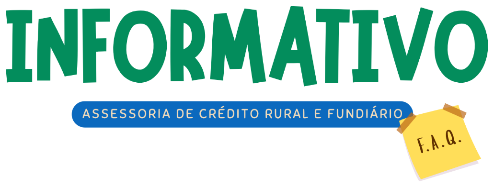
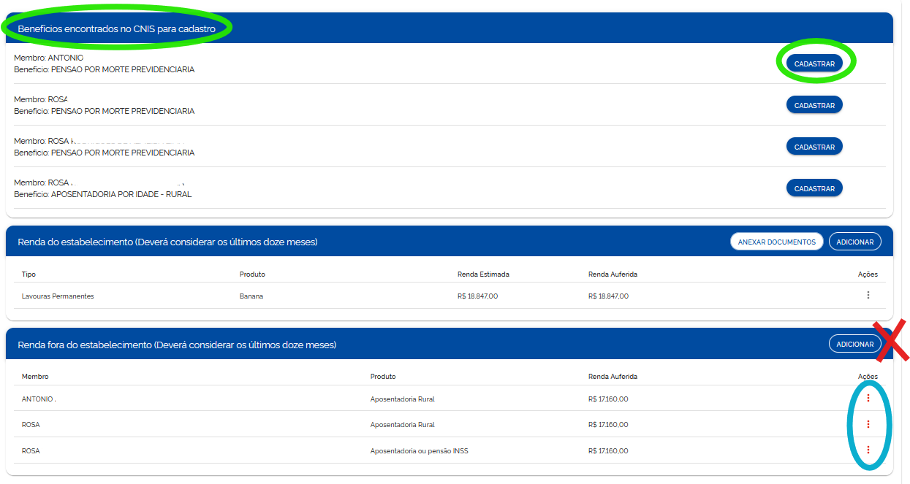
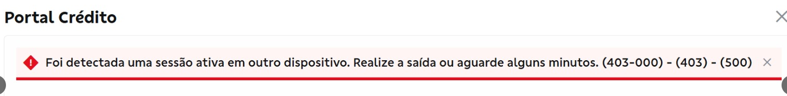
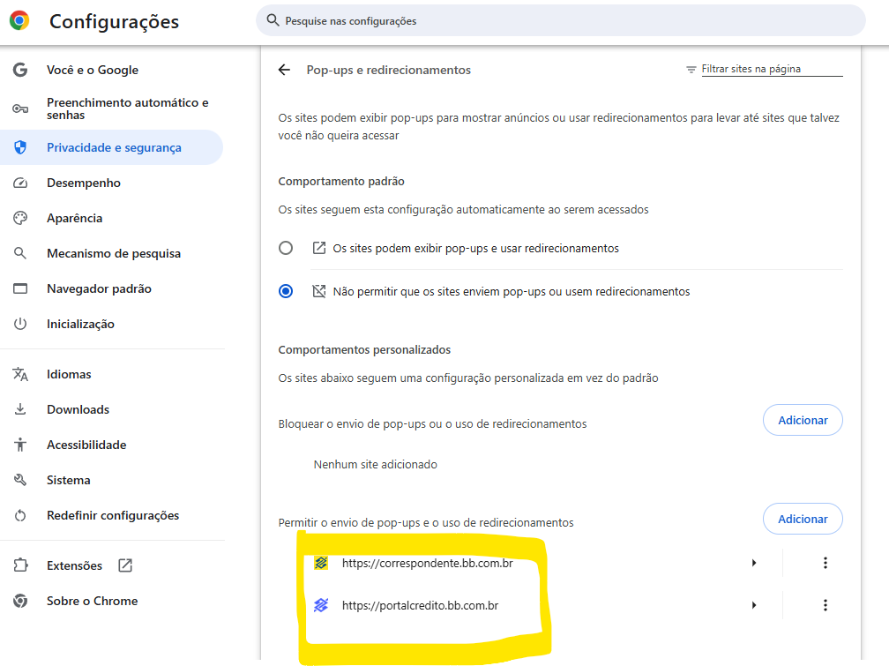
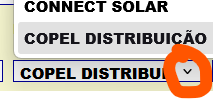
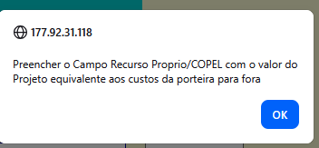
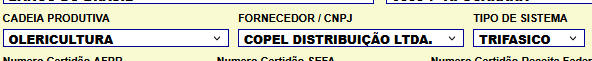
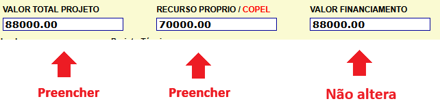
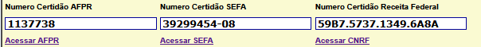
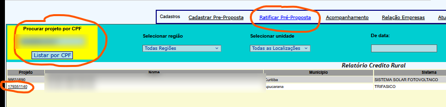

Apresentação
Este caderno reúne as orientações técnicas emitidas pela Assessoria Estadual de Crédito Rural e Fundiário do IDR-Paraná, destinadas aos extensionistas. Os informativos estão organizados do mais recente ao mais antigo.
Informativo 017/2026: Laudos para enquadramento no Proagro de culturas não zoneadas
Palavras-chave: ZARC, Proagro, Seguro Rural, laudo de indicação de cultivo, culturas não zoneadas, MCR 12-2-8, Portaria IDR-Paraná nº 360/2026, olericultura, fruticultura
Temos recebido, quase diariamente, pedidos de laudos de recomendação de cultivo para enquadramento no Proagro e no Seguro Rural, vindos dos extensionistas, de instituições financeiras e de entidades que atendem os agricultores. Mudanças nas exigências de documentação do crédito rural, definidas pelo Conselho Monetário Nacional, têm impacto imediato, enquanto a construção de uma solução técnica segura leva mais tempo. Este informativo resume o que está sendo feito no IDR-Paraná e como orientar quem nos procura.
1. Situação atual
- O IDR-Paraná não está emitindo, neste momento, laudos individuais de recomendação de cultivo em substituição ao ZARC.
- A instituição está construindo Notas Técnicas padrão para o estado, por meio de um Grupo de Trabalho Permanente instituído pela Portaria IDR-Paraná nº 360, de 26 de outubro de 2026.
- Assim que houver definição, as equipes e as entidades parceiras serão informadas.
2. O que diz a norma
O Zoneamento Agrícola de Risco Climático (ZARC) é um instrumento técnico e normativo de competência do Ministério da Agricultura e Pecuária (MAPA). É elaborado pela Embrapa e oficializado por portarias ministeriais que definem, para cada município, as janelas de plantio e os níveis de risco climático de cada cultura.
O Manual de Crédito Rural (MCR 12-2-8) admite o uso de laudos emitidos por instituições oficiais de assistência técnica ou pesquisa somente quando não existe portaria ZARC para a cultura. Essa possibilidade não se aplica quando já existe portaria vigente para a cultura, mesmo que o município não esteja entre os contemplados. Ou seja, o laudo não pode ser usado para ampliar o zoneamento para áreas que a portaria não prevê.
3. O que o IDR-Paraná está fazendo
A Portaria IDR-Paraná nº 360/2026 instituiu um Grupo de Trabalho Permanente (GTP) para elaborar Notas Técnicas de indicação de plantio de olerícolas e frutíferas em áreas não zoneadas, considerando os diferentes agrossistemas do Paraná. O grupo reúne pesquisadores e extensionistas do Instituto e trabalha de forma colegiada.
O levantamento das demandas é feito pela Assessoria Estadual de Crédito Rural e Fundiário, baseado nos relatórios do BACEN, e encaminhado ao GTP, que define o cronograma de produção das Notas Técnicas. A metodologia das Notas foi estabelecida pelos grupos e está em fase de construção.
Esses documentos estarão ligados a mecanismos de redução de perdas financiados com recursos públicos, como o Proagro e o Seguro Rural, e a culturas de alto valor agregado muito expostas a adversidades climáticas. Por isso, o processo precisa ser conduzido com segurança técnica, responsabilidade institucional e alinhamento às normas federais vigentes.
4. Orientação aos técnicos
- Enquanto as Notas Técnicas não forem publicadas, não emitam laudos individuais de recomendação de cultivo para fins de Proagro ou Seguro Rural.
- As unidades que já recusaram pedidos agiram corretamente, seguindo a orientação repassada pela Assessoria desde as primeiras demandas.
- Ao atender agricultores, instituições financeiras e entidades, expliquem com cordialidade que o tema está em construção e que a recusa não é uma negativa ao agricultor, e sim um cuidado com a segurança do processo.
- O GTP pode solicitar a contribuição técnica das equipes regionais e locais.
Fontes: Portaria IDR-Paraná nº 360, de 26 de outubro de 2026; Manual de Crédito Rural, MCR 12-2-8.
Informativo 016/2026: Pronaf A, segunda contratação (beneficiários do PNRA e do PNCF)
Palavras-chave: Pronaf A, Pronaf A/C, segunda operação, normas transitórias, MCR 10-18-11, PNCF, PNRA, assistência técnica, ASTEC
Os escritórios têm recebido pedidos de orientação sobre a segunda contratação do Pronaf A, prevista nas normas transitórias do Manual de Crédito Rural (MCR). Este informativo resume quem pode acessar a linha, as regras da primeira e da segunda contratação e quando a assistência técnica é obrigatória.
1. Quem é o beneficiário
O Pronaf A e A/C atende os beneficiários do Programa Nacional de Reforma Agrária (PNRA), do Programa Nacional de Crédito Fundiário (PNCF) e do Programa Cadastro de Terras e Regularização Fundiária, com CAF válido.
A segunda contratação é restrita aos beneficiários do PNRA e do PNCF que já tenham atingido, total ou parcialmente, o limite de crédito do Pronaf A. A possibilidade valia só para o PNRA e foi estendida ao PNCF pela Resolução CMN nº 5.230/2025.
2. Assistência técnica: obrigatória ou dispensada?
- Beneficiário do PNCF ainda dentro dos 5 anos de ATER obrigatória do Crédito Fundiário: a assistência técnica do Pronaf A é dispensada, porque ele já está assistido pelo PNCF.
- Fora desse período (e beneficiários do PNRA): a assistência técnica é obrigatória durante, pelo menos, os 3 primeiros anos de implantação do projeto.
- O que é opcional é financiar ou não a ASTEC. Se o agricultor optar por não financiar, ele paga a assistência técnica com recurso próprio. Nesse caso, é usada uma Declaração de Ciência de Assistência Técnica, encaminhada à Assessoria Estadual de Crédito Rural e Fundiário para a emissão dos boletos.
Atenção, ASTEC financiada exige carência: conforme orientação do Banco do Brasil (único agente que opera o Pronaf A), quando a assistência técnica é financiada não é possível pagar a primeira parcela no primeiro ano. A contratação com carência é obrigatória, porque o recurso da ASTEC é liberado semestralmente para pagamento do técnico nos três primeiros anos, que equivalem à carência. O banco não permite o pagamento de parcelas enquanto ainda houver valores a disponibilizar na conta do agricultor.
3. Primeira contratação
Condições do investimento no Pronaf A para o Plano Safra 2026/2027:
- investimento de até R$ 55.000,00, acrescido de até R$ 3.000,00 de ASTEC quando ela for financiada (total de até R$ 58.000,00);
- juros de 0,5% ao ano;
- prazo de até 10 anos, com até 3 anos de carência;
- bônus de adimplência de 40%.
Percentual da ASTEC: a ASTEC corresponde a 5,172% do total financiado (R$ 3.000,00 em R$ 58.000,00) ou, o que dá no mesmo, a 5,45% do valor do investimento (R$ 3.000,00 sobre R$ 55.000,00). O cálculo pode ser feito das duas formas; o resultado é o mesmo.
Se a ASTEC não for financiada, não há ampliação do limite de investimento: ele continua em R$ 55.000,00.
O IDR-Paraná faz a cobrança da ASTEC por boletos, conforme instrução específica.
4. Segunda contratação
Prevista no item 11 da Seção 18 (Normas Transitórias) do Capítulo 10 do MCR, em caráter excepcional, para novas operações de investimento e de custeio no Pronaf “A” e “A/C”. As operações devem ser contratadas até 30/06/2027.
- Limite: até R$ 50.000,00 no total, que pode ser dividido em uma ou mais operações. O limite da primeira contratação não se aplica aqui.
- ASTEC dentro do limite: não existe limite adicional para a ASTEC. Quando financiada, a remuneração é destacada dentro dos R$ 50.000,00 e fica limitada a 5% desse total, durante, pelo menos, os 3 primeiros anos de implantação do projeto.
- ASTEC não financiada: os R$ 50.000,00 ficam inteiros para o investimento.
- Quem pode contratar (alínea “f”, incluída pela Resolução CMN nº 5.270/2025): “somente poderão contratar as novas operações de que trata este item os beneficiários com operações em ser, desde que encerrado o período de carência e paga ao menos uma parcela da referida operação”.
| Composição | Com ASTEC financiada | Sem ASTEC financiada |
|---|---|---|
| Investimento | R$ 47.500,00 | R$ 50.000,00 |
| ASTEC | R$ 2.500,00 (5% do total) | Paga com recurso próprio |
| Total do financiamento | R$ 50.000,00 | R$ 50.000,00 |
5. Resumo
| Primeira contratação | Segunda contratação | |
|---|---|---|
| Quem | PNRA, PNCF e Cadastro de Terras | PNRA e PNCF que atingiram o limite do Pronaf A |
| Investimento com ASTEC financiada | Até R$ 55.000,00 + R$ 3.000,00 de ASTEC | Até R$ 47.500,00 + R$ 2.500,00 de ASTEC |
| Investimento sem ASTEC financiada | Até R$ 55.000,00 (sem ampliação) | Até R$ 50.000,00 |
| Percentual da ASTEC | 5,172% do total ou 5,45% do investimento | Até 5% do total |
| Condição | Primeiro acesso ao Pronaf A | Carência da operação anterior encerrada e ao menos uma parcela paga |
| Prazo para contratar | Conforme o Plano Safra vigente | Até 30/06/2027 |
| ASTEC financiada | Contratação obrigatoriamente com carência | Contratação obrigatoriamente com carência |
Fontes: Manual de Crédito Rural, Capítulo 10, Seção 18, item 11 (Resoluções CMN nº 5.230/2025 e nº 5.270/2025); Resumo das linhas do Pronaf, Plano Safra 2026/2027 (MDA).
Informativo 015/2026: Equalização de juros do BAP em projetos Pronaf por Plano Safra
Palavras-chave: Banco do Agricultor Paranaense, BAP, Pronaf, equalização de juros, Plano Safra, pecuária de leite, Decreto nº 10.163/2022
O Comitê Gestor do Banco do Agricultor Paranaense (BAP) comunicou aos agentes financeiros, ad referendum, um esclarecimento importante sobre a equalização de juros nos projetos de beneficiários do Pronaf. Resumimos abaixo o que muda na prática para o atendimento de campo.
1. Base normativa
Aplica-se o § 4º do art. 44 do Decreto Estadual nº 10.163/2022, incluído pelo Decreto nº 9.713/2025. Os projetos de beneficiários do Pronaf nas seções abaixo podem receber equalização de juros por Plano Safra, nos limites estabelecidos pelo CMN e codificados no Manual de Crédito Rural (MCR):
- Seção IV: Pecuária de Leite;
- Seção VI: Produção de Pinhão e Erva-Mate;
- Seção VII: Piscicultura;
- Seção VIII: cadeias produtivas da seda, café, olericultura, produção orgânica e agroecológica, floricultura e fruticultura;
- Seção XI: Apicultura.
2. Limite de animais por Plano Safra
Nos projetos de Pecuária de Leite (Seção IV), o limite de até 15 matrizes leiteiras e 1 reprodutor é contado por beneficiário e por Plano Safra. Ou seja, o agricultor que já financiou animais em uma safra anterior pode acessar o programa novamente na safra seguinte, respeitando o limite daquela safra.
3. Requisitos para novos projetos
A aprovação de novos projetos depende da apresentação do extrato da DAP ou do CAF com enquadramento válido, respeitando os limites e tetos do Pronaf estabelecidos pelo CMN no MCR.
4. Operações já contratadas
As operações contratadas antes deste comunicado, que respeitaram os limites por operação ou safra, continuam válidas. Não é necessário fazer aditivo nem qualquer ajuste no contrato.
5. Prazo: atenção à data de 17/12/2026
Esta orientação vale para operações protocoladas e contratadas até 17 de dezembro de 2026. O Manual Operacional do BAP será revisado no início de 2027, após o recesso administrativo estadual (18/12/2026 a 03/01/2027), para incorporar expressamente essa regra.
Por isso, recomendamos não encaminhar novas propostas após 17/12/2026. Propostas que não forem contratadas até essa data devem aguardar a publicação do Manual revisado, para evitar retrabalho e enquadramento em regras desatualizadas.
Sobre a disponibilidade de recursos do BAP nos agentes financeiros, ver o Informativo 014/2026.
Informativo 014/2026: Disponibilidade de recursos do Banco do Agricultor Paranaense
Palavras-chave: Banco do Agricultor Paranaense, BAP, Fomento Paraná, aporte de recursos, agentes financeiros, fila de propostas
Este informativo atualiza a situação dos recursos do Banco do Agricultor Paranaense (BAP) nos agentes financeiros, conforme as informações disponíveis em 13 de novembro de 2026.
1. Situação por agente financeiro
A Fomento Paraná realizou novos aportes de recursos do BAP para os agentes financeiros Sicoob, BRDE e Cresol. A situação dos demais agentes está no quadro abaixo.
| Agente financeiro | Situação |
|---|---|
| Sicoob | Recebeu novo aporte de recursos. |
| BRDE | Recebeu novo aporte de recursos. |
| Cresol | Recebeu novo aporte de recursos. |
| Sicredi | Sem disponibilidade de recursos no momento. Há solicitação prioritária de novo aporte ainda este ano, considerando a reunião do Conselho prevista para o final de novembro. |
| Banco do Brasil | Não recebeu novos recursos e, no momento, não há previsão de aporte, em razão de pendências entre o agente financeiro e a Fomento Paraná. |
2. Uso dos recursos aportados
Até o momento, não recebemos os relatórios de contratação dos agentes financeiros. Esses relatórios são necessários para verificar quanto dos recursos já aportados foi efetivamente utilizado e quanto foi destinado ao atendimento da fila de projetos que aguardavam contratação.
3. Orientação aos técnicos
Não recomendamos incentivar a inclusão de propostas na fila para análise quando houver expectativa de contratação rápida, justamente por não sabermos o nível de comprometimento do recurso aportado.
4. Próximas atualizações
Assim que recebermos novas informações ou atualizações sobre a disponibilidade dos recursos, repassaremos a todos por este mesmo canal.
Informativo 013/2026: Crédito para turismo rural
Palavras-chave: turismo rural, hospedagem, chalés, Pronaf, Banco do Agricultor Paranaense, BRDE, Fungetur, Cadastur
Os escritórios têm recebido pedidos de orientação sobre financiamento para turismo rural, como a construção de chalés para hospedagem. Este informativo reúne as linhas disponíveis e os documentos normalmente exigidos para o projeto. As orientações valem para o turismo rural de forma geral: hospedagem (chalés, cabanas, camping), alimentação (café colonial, restaurante rural), lazer e visitação (trilhas, pesque-pague, colha-e-pague) e venda direta de produtos da propriedade.
1. Pronaf (agricultor com CAF ativo)
É o caminho mais vantajoso. O Pronaf financia investimento em atividades agropecuárias e não agropecuárias desenvolvidas no estabelecimento rural, incluindo implantação, ampliação ou modernização de infraestrutura para prestação de serviços, o que abrange o turismo rural.
- Pronaf Mais Alimentos ou Agroindústria: linhas de investimento para famílias com renda bruta anual de enquadramento de até R$ 500 mil.
- Taxa de 7,5% ao ano e limite de R$ 250 mil por ano safra.
- A renda do turismo deve estar considerada no CAF. Sobre o enquadramento da renda de prestação de serviços no estabelecimento, ver o Informativo 001/2026.
2. Banco do Agricultor Paranaense
O turismo rural está entre as atividades com juro zero, com subvenção do Estado. A linha é operada pelo Banco do Brasil, BRDE, Fomento Paraná e cooperativas de crédito conveniadas (Sicredi, Cresol, Sicoob, entre outras). Consultar a agência da região sobre a disponibilidade de recurso e o enquadramento atual.
3. Quem não se enquadra no Pronaf
- BRDE Meu Agro, que também atende turismo rural.
- Fungetur (Ministério do Turismo), pela Fomento Paraná (linha Fomento Turismo, Projetos de Investimento) e pelo BRDE Mais Turismo. Atenção: essas linhas são voltadas a empreendimentos turísticos formalizados, normalmente com CNPJ e cadastro no Cadastur.
4. Documentos para o projeto
- CAF ativo e atualizado, com a renda do turismo considerada no estabelecimento.
- Documentação do imóvel (matrícula ou contrato de arrendamento ou uso) e CAR.
- Orçamento da obra (materiais e mão de obra), croqui ou planta simples e memorial descritivo. Verificar com o banco se é exigida ART de engenheiro ou arquiteto.
- Alvará ou licença de construção na prefeitura e, conforme o porte, licenciamento ambiental no IAT.
- Cadastro no Cadastur, recomendado: ajuda na divulgação e abre acesso a outras linhas.
5. Capacidade de pagamento
A viabilidade do turismo se calcula de forma diferente da de uma lavoura. Recomenda-se demonstrar o número de unidades ou atendimentos (chalés, refeições, visitantes), o preço da diária ou do serviço, a taxa de ocupação ou frequência estimada ao longo do ano, considerando a sazonalidade, e a receita esperada, descontados os custos de operação.
6. Primeiro passo
O produtor deve procurar a cooperativa de crédito ou o banco onde opera para saber qual linha tem recurso disponível no momento. Depois disso, o projeto é montado conforme o modelo do agente financeiro.
Fonte: Resumo das linhas do Pronaf, Plano Safra 2026/2027 (MDA)
Informativo 012/2026: MP 1.376/2026, renegociação de dívidas rurais
Palavras-chave: MP 1.376/2026, renegociação de dívidas, laudo técnico, perdas de safra, CPR, Boletim Agrometeorológico
Com a publicação da Medida Provisória nº 1.376/2026, muitos agricultores têm procurado os escritórios do IDR-Paraná em busca de orientação e de laudos para renegociar suas dívidas. Este informativo resume o que a medida prevê e reforça como os técnicos devem orientar e atuar nesses casos.
1. O que é a MP 1.376/2026
A Medida Provisória nº 1.376 foi publicada no Diário Oficial da União em 15/07/2026 e autoriza linhas de crédito para liquidar ou amortizar dívidas de crédito rural e Cédulas de Produto Rural (CPRs) de produtores afetados por perdas de safra, redução de renda e eventos climáticos adversos.
A medida foi regulamentada pelo Conselho Monetário Nacional (CMN) em 23/07/2026. O prazo para contratação das linhas vai até 12 de novembro de 2026.
A MP não é perdão de dívida: trata-se de uma nova operação de crédito, contratada para quitar ou amortizar as dívidas existentes, com novas condições de prazo e juros.
2. Quem pode acessar
Podem acessar as linhas produtores do Pronaf, do Pronamp, demais produtores rurais e cooperativas de produção agropecuária que comprovem, cumulativamente:
- perdas em duas ou mais safras entre 2019 e 2025;
- redução de, no mínimo, 30% da renda bruta agropecuária esperada para a safra ou atividade financiada;
- perdas provocadas por eventos climáticos extremos ou pela redução dos preços de comercialização dos produtos financiados;
- laudo emitido por profissional legalmente habilitado.
Há condições diferenciadas para perdas mais severas: produtores que comprovem perdas em três ou mais safras entre 2019 e 2025, provocadas por eventos climáticos extremos, com redução mínima de 40% da renda bruta esperada.
3. Condições gerais
- Contempla apenas dívidas bancárias. Dívidas privadas, feitas fora do sistema financeiro, não foram incluídas.
- Juros entre 5% e 12% ao ano, conforme a faixa de enquadramento e o programa (Pronaf, Pronamp ou demais produtores).
- Prazo de até dez anos, com dois anos de carência para o principal. Durante a carência, os juros são pagos.
- Os limites são cumulativos por mutuário, mesmo que existam operações em mais de uma instituição financeira.
- Valores acima dos limites podem ser financiados em linha complementar, com taxa negociada diretamente com o banco.
4. Pontos de atenção
- A contratação não é automática: o banco fará análise de crédito, risco e garantias.
- Operações encaminhadas para inscrição em Dívida Ativa da União não podem ser incluídas.
- Valores já liquidados ou amortizados antes da MP, inclusive com Proagro ou seguro rural, não serão reembolsados.
- A contratação da nova linha não deve, por si só, impedir novo crédito rural nem gerar registro em cadastros restritivos.
- Informações ou laudos falsos podem levar à perda do benefício, à restituição dos valores e ao impedimento de contratar crédito subvencionado ou receber incentivos públicos por até cinco anos, sem prejuízo de outras sanções.
5. Primeiro passo: o agente financeiro
O produtor deve procurar inicialmente o agente financeiro onde mantém a operação, para uma análise preliminar da sua situação. É o banco quem verifica se as operações e o mutuário se enquadram ou não como beneficiários da MP.
Somente após essa verificação faz sentido avançar para a elaboração de laudos e demais documentos.
6. Laudos técnicos e responsabilidade profissional
Os processos de renegociação devem ser fundamentados em laudos técnicos que comprovem perdas de produção ou dificuldades de comercialização.
- Não é possível emitir laudos de perdas de produtividade para lavouras que não foram acompanhadas tecnicamente pelo IDR-Paraná.
- Quando a operação foi elaborada e acompanhada por profissionais de empresas privadas, cabe a esses responsáveis a emissão dos laudos e os encaminhamentos necessários aos agricultores.
- O laudo é de responsabilidade do profissional que o assina, inclusive quanto às sanções previstas na MP para informações falsas.
7. Perdas por eventos climáticos
Para situações de perdas decorrentes de eventos climáticos, como seca ou excesso de chuvas, o Boletim Agrometeorológico do IDR-Paraná, publicado mensalmente, pode ser utilizado como documento de apoio às solicitações:
https://www.idrparana.pr.gov.br/Pagina/Boletim-Agrometeorologico
8. Considerações finais
A Medida Provisória é um instrumento importante para contribuir com a recuperação da capacidade financeira dos agricultores, devendo ser aplicada com critério técnico, observando os requisitos legais e a responsabilidade dos profissionais envolvidos.
Novidades sobre a tramitação da MP no Congresso Nacional ou novas regulamentações serão complementadas por este mesmo canal.
Informativo 011/2026: Perguntas frequentes sobre o CAF como comprovante para o CAD/PRO
Palavras-chave: CAD/PRO, CAF, cadastro simplificado, vínculo com a terra, NPF nº 022/2026
Recebemos diversos questionamentos sobre o tema, inclusive de prefeituras que nos procuraram para entender a alteração. Reunimos abaixo as dúvidas mais comuns sobre as mudanças na documentação para acesso ao CAD/PRO.
1. O CAF passou a ser obrigatório para fazer o CAD/PRO?
Não. O CAF não é obrigatório. Ele passou a ser uma alternativa: quem tem CAF pode usá-lo como comprovante para obter a inscrição simplificada no CAD/PRO.
2. Qual norma trouxe essa mudança e quando ela vale?
A Norma de Procedimento Fiscal nº 022/2026, da Receita Estadual do Paraná, publicada no DOE nº 12.192, de 23/07/2026. Ela acrescentou a Seção III-A, “Do Cadastro Simplificado”, à NPF nº 031/2015 e produz efeitos a partir de 1º de setembro de 2026.
3. Quem pode obter a inscrição simplificada no CAD/PRO?
A Unidade Familiar de Produção Agrária (UFPA) com inscrição no CAF (item 4-A). O associado à produção também pode obtê-la em nome próprio, desde que desenvolva atividade rural em regime de economia familiar com o titular (item 4-B).
4. Quais documentos o CAF substitui?
Os documentos do imóvel e os documentos pessoais exigidos na Seção III da NPF nº 031/2015 (item 4.1-A). O CAF passa a comprovar, ao mesmo tempo, a condição de produtor rural e o vínculo com a terra.
5. O agricultor que não tem documento formal da terra pode ter CAD/PRO?
Sim, essa é a principal mudança. Antes, agricultores sem documento formal de vínculo com a terra, como alguns acampados, não conseguiam acessar o CAD/PRO e, por isso, não podiam emitir nota fiscal da sua produção. Agora o CAF comprova o vínculo inclusive nos casos de título de domínio, concessão de uso, arrendamento, outros direitos reais ou posse por simples ocupação, abrangendo unidades familiares tradicionais indígenas e quilombolas e assentados da reforma agrária (item 4.2-A).
6. Quem já tem escritura, contrato de arrendamento ou comodato precisa mudar alguma coisa?
Não. Os demais comprovantes de vínculo com a terra (propriedade, posse, comodato, arrendamento etc.) continuam válidos para os demais portes e categorias de agricultores.
7. Onde o agricultor faz a inscrição no CAD/PRO?
Nada mudou: a inscrição continua sendo requerida na prefeitura do município onde o produtor exerce a atividade.
8. Como o agricultor comprova que tem CAF?
Presencialmente, mediante acesso ao sistema, por solicitação à entidade emissora ou por certidão emitida por ela (item 4.3-A). Na prática, a norma se refere ao Extrato do CAF, que também pode ser emitido na versão completa pelo próprio agricultor, acessando o sistema do CAF com sua conta Gov.br.
9. O que acontece quando o CAF vence?
A manutenção do CAD/PRO simplificado fica vinculada à validade do CAF. Vencido o CAF, o produtor deve renová-lo e apresentar o novo documento à Receita Estadual do Paraná, sob pena de cancelamento do CAD/PRO (item 4.4-A). Por isso, oriente o agricultor a acompanhar a validade do seu CAF e a providenciar a renovação dentro do prazo.
10. A emissão do CAF mudou?
Não. A mudança está no CAD/PRO, e não no CAF. Os critérios de enquadramento e a análise para emissão do CAF continuam os mesmos, conforme a Portaria MDA nº 19/2025. Cada situação deve ser analisada de acordo com a documentação prevista na Portaria, que contempla modelos de autodeclaração para povos e comunidades tradicionais, autodeclaração de ocupação de área de terra e autodeclaração de renda.
11. E o agricultor que não tem comprovante de renda?
Podem surgir casos de agricultores sem comprovante de renda que buscam o CAF justamente para, depois, obter o CAD/PRO e iniciar a comercialização formal da produção. Nesses casos, oriente sobre a possibilidade de utilizar a autodeclaração de renda prevista na Portaria MDA nº 19/2025.
Informativo 010/2026: Microcrédito Rural e Microcrédito Mulher Rural da Fomento Paraná
Palavras-chave: Microcrédito Rural, Microcrédito Mulher Rural, Fomento Paraná, CAF, PNMPO
Em virtude da divulgação recente sobre o Microcrédito Rural, operacionalizado pela Fomento Paraná, orientamos sobre o que está disponível até o momento. Novidades ou publicações de normativas serão complementadas por este mesmo canal.
1. O que é a linha
O Microcrédito Fácil é uma linha já operada pela Fomento Paraná, voltada a empreendedor informal, MEI ou microempresa, com faturamento anual de até R$ 360 mil. O que foi anunciado é a extensão dessa estrutura ao público rural, por meio de duas novas sublinhas:
- Microcrédito Rural: para produtores homens;
- Microcrédito Mulher Rural: para mulheres integrantes de Unidades Familiares Rurais.
2. Base normativa
A subvenção anunciada está fundamentada no Decreto Estadual nº 10.163/2022, que trata da subvenção do Banco do Agricultor, do Banco do Empreendedor e do microcrédito.
A operação segue as regras do Programa Nacional de Microcrédito Produtivo Orientado (PNMPO, Lei Federal nº 13.636/2018), que exige que o recurso seja destinado a projeto produtivo, com orientação de uso. O enquadramento é simplificado: uma proposta simples de projeto produtivo, uma previsão de acompanhamento técnico e a apresentação de garantias à operação.
3. Limites e condições da linha rural
Conforme divulgado:
- crédito de até R$ 20 mil, para CAF ativo há mais de 12 meses;
- crédito de até R$ 10 mil, para CAF ativo há menos de 12 meses;
- prazo de pagamento de até 36 meses, com carência de até 3 meses;
- juros de 0,78% ao mês no Microcrédito Rural, com pagamento em dia;
- sem cobrança de juros no Microcrédito Mulher Rural (subvenção do Decreto nº 10.163/2022).
As condições podem ser ajustadas com a publicação das normativas da linha.
4. Como orientar o produtor
Pelo divulgado, o acesso ao público rural exige inscrição ativa no CAF. Sem CAF ativo, não há acesso à linha.
- Oriente o produtor a procurar o agente de crédito da Fomento Paraná no município, muitas vezes vinculado à Sala do Empreendedor da prefeitura, por convênio.
- Se não houver convênio local, o contato pode ser feito diretamente com a Fomento Paraná: telefone (41) 3200-5900, WhatsApp (41) 99938-9215 ou cadastro on-line.
- Consulte o mapa de atendimento no site da Fomento Paraná para verificar se algum município vizinho possui ponto de atendimento.
Sugerimos que os extensionistas verifiquem com a prefeitura se existe ponto de atendimento no município e, caso não exista, orientem a prefeitura a se credenciar junto à Fomento Paraná.
5. Links
- Mapa de atendimento (rolar até o final da página, até aparecer o mapa ou a lista de municípios): https://www.fomento.pr.gov.br/#mapa-form
- Microcrédito Rural: https://www.fomento.pr.gov.br/MICROCREDITO-RURAL
- Banco da Mulher Paranaense, Microcrédito: https://www.fomento.pr.gov.br/Banco-da-Mulher-Paranaense/Microcredito
- Banco da Mulher Paranaense, Microempresa: https://www.fomento.pr.gov.br/Credito/Banco-da-Mulher-Paranaense/MPE
Informativo 009/2026: Cadastro de rendas do CNIS no CAF
Palavras-chave: CAF, CNIS, aposentadoria, pensão, renda fora do estabelecimento
Aposentadorias, pensões e demais benefícios encontrados no CNIS devem ser cadastrados pelo próprio quadro “Benefícios encontrados no CNIS para cadastro”, e não lançados manualmente.
1. Como cadastrar

- Use o botão “Cadastrar” (destaque verde) ao lado de cada benefício listado no quadro do CNIS. Assim o benefício é vinculado ao membro correto.
- Não use o botão “Adicionar” (X vermelho) do quadro “Renda fora do estabelecimento” para lançar benefícios que já aparecem no CNIS. O lançamento manual pode duplicar a renda da família.
- Confira os lançamentos pelo menu de ações (três pontinhos, destaque azul) do quadro “Renda fora do estabelecimento”: verifique membro, tipo de benefício e valor, e corrija ou exclua o que estiver duplicado ou incorreto.
2. Período de referência
Os dois quadros de renda devem considerar os últimos doze meses.
Informativo 008/2026: Seguro no crédito rural, o que é obrigatório e o que não é
Palavras-chave: seguro rural, Proagro, garantias, venda casada
Muitos produtores têm dúvida se o seguro é obrigatório para conseguir crédito rural. Este informativo resume o que a norma exige e o que pode ser prática indevida do banco.
1. O que é previsto em norma (Proagro e seguro como garantia)
- Em operações de custeio agrícola com recursos controlados, dentro do Zoneamento Agrícola de Risco Climático (Zarc) e até o limite definido pelo Banco Central (hoje R$ 300 mil), o enquadramento no Proagro é obrigatório.
- Acima desse limite, não há obrigatoriedade de Proagro nem de seguro privado.
- Se o produtor contrata seguro agrícola privado, fica dispensado do Proagro. São alternativas, nunca as duas coisas ao mesmo tempo.
- O Manual de Crédito Rural permite que o banco exija seguro agrícola como garantia da própria operação financiada (por exemplo, sobre a lavoura custeada), principalmente acima do limite do Proagro.
- Toda garantia ou seguro vinculado à operação deve ser negociado com o produtor, com o custo explicado com clareza. Não é permitido custo embutido sem que o produtor saiba o que está pagando e por quê.
2. O que não pode ser exigido (venda casada)
Venda casada é condicionar a liberação do crédito à compra de produtos sem relação com a operação financiada. É proibida pelo Código de Defesa do Consumidor. Exemplos:
- seguro de vida de terceiros, de automóvel, residencial, saúde ou odontológico;
- títulos de capitalização e planos de previdência privada como condição para liberar o crédito;
- a chamada “reciprocidade”: exigir, mesmo informalmente, que parte do valor do empréstimo seja usada na compra de outros produtos do banco;
- impor a contratação do seguro apenas com a seguradora do próprio banco, sem permitir a escolha de outra;
- não avisar claramente que a contratação de um seguro, quando não obrigatório por norma, é opcional.
3. Como identificar e o que fazer
- Pergunte: o seguro está ligado diretamente à lavoura ou ao bem financiado? Se sim, pode ser exigido como garantia. Se não, o produtor tem o direito de recusar.
- Oriente o produtor a pedir ao gerente que informe, por escrito, se o seguro é obrigatório por norma ou apenas oferecido como opção.
- Se o produtor não pôde escolher a seguradora ou sentiu que o crédito só seria liberado com a compra de produtos extras, a situação pode ser denunciada no Banco Central (bcb.gov.br) ou no Consumidor.gov.br, ou levada para orientação jurídica.
Informativo 007/2026: Não recebimento do reembolso do Banco do Agricultor Paranaense (BAP)
Palavras-chave: BAP, reembolso, Banco do Brasil, Fomento Paraná
Quando um produtor relatar que não recebeu o reembolso do BAP, oriente-o a seguir os passos abaixo antes de acionar o IDR-Paraná.
1. Passo a passo
- Verificar o enquadramento na cédula. Confirme se a operação tem cláusula de BAP prevista na Cédula de Crédito Rural. O IDR-Paraná pode auxiliar na localização do projeto no portal, se necessário.
- Confirmar a data de pagamento. O produtor deve verificar no extrato bancário se a parcela foi paga na data exata do vencimento. O pagamento fora do prazo pode descaracterizar o direito ao bônus.
- Verificar os extratos mensais seguintes. Se o pagamento foi feito em dia, o produtor deve conferir os extratos mês a mês, a partir do mês seguinte ao pagamento, buscando créditos de reembolso, inclusive de juros pagos na carência, quando aplicável.
- Acionar a agência bancária. Se nenhum crédito for identificado, o primeiro contato deve ser com a agência do Banco do Brasil onde a operação foi contratada, pedindo esclarecimento formal sobre o não reembolso.
- Acionar a Fomento Paraná. Se a agência não responder ou não resolver, o caso deve ser encaminhado à Fomento Paraná.
2. Importante
O IDR-Paraná não tem acesso ao detalhamento interno do cálculo do BAP feito pelo banco. A conferência dos extratos e o contato com a agência são etapas indispensáveis antes de qualquer encaminhamento institucional.
Informativo 006/2026: Erro “Sessão ativa” no Banco do Brasil
Palavras-chave: Banco do Brasil, Portal Crédito, pop-up, navegador
O erro de sessão ativa no Portal Crédito do Banco do Brasil costuma ocorrer quando o bloqueador de pop-up do navegador está ativo.

1. Por que acontece
Ao autorizar os pop-ups e tentar entrar novamente, o sistema retorna a mensagem de login múltiplo. Nesse caso, aguarde alguns minutos com a janela aberta e tente acessar de novo.
2. Como configurar o Chrome
- Clique nos três pontinhos no canto superior direito e acesse “Configurações”.
- Vá em “Privacidade e segurança”.
- Acesse “Configurações de site”.
- Selecione “Pop-ups e redirecionamentos”.
- Em “Permitir o envio de pop-ups e o uso de redirecionamentos”, clique em “Adicionar” e inclua os sites https://correspondente.bb.com.br e https://portalcredito.bb.com.br
- Feche as configurações e tente acessar novamente.

3. Importante
Se o cache, o histórico ou as configurações do navegador forem limpos, a permissão de pop-up é perdida e o processo precisa ser refeito.
Informativo 005/2026: Renda estimada, renda auferida e rebate no CAF
Palavras-chave: CAF, renda estimada, renda auferida, rebate, Pronaf
No cadastro de renda do CAF, os campos de renda estimada e renda auferida devem ser preenchidos com os valores reais, e o rebate de 30% é aplicado automaticamente pelo sistema.
1. Renda estimada e renda auferida
- Renda estimada: valor que o produtor esperava receber no período de referência, caso não tivesse ocorrido perda de produção, de comercialização ou outro fator que reduzisse o resultado.
- Renda auferida: valor efetivamente recebido pelo produtor, comprovado por notas fiscais.
2. Rebate de 30%
Para acesso ao Pronaf, considera-se um rebate de 30% sobre a renda das cadeias leiteira, cafeicultura, fruticultura e olericultura. O rebate:
- é calculado automaticamente pelo sistema, de forma invisível;
- não aparece em nenhum campo do formulário de Cadastro de Renda;
- só fica perceptível quando a renda familiar total supera R$ 500.000,00, caso em que o sistema gera enquadramento do CAF na faixa V.
3. Importante
Quando há mais de uma atividade, o rebate incide apenas sobre o valor das atividades contempladas, e não sobre a renda bruta total da família. Exemplo: em uma família com leite e soja, o rebate de 30% incide somente sobre a renda da atividade leiteira.
Informativo 004/2026: Áreas importadas do SIGEF/SNCR no sistema CAF
Palavras-chave: CAF, SIGEF, SNCR, INCRA, áreas do imóvel
As áreas vinculadas ao imóvel e disponibilizadas pelo SIGEF e/ou SNCR não podem ser excluídas pelo sistema CAF, pois são importadas das bases oficiais do INCRA. Essa situação geralmente ocorre quando o agricultor possui ou já possuiu a área em seu nome, integral ou parcialmente.
1. Correções e atualizações
Exclusões ou correções cadastrais devem ser feitas junto ao INCRA. Se a área não aparece mais nas consultas do INCRA, é possível que o sistema CAF ainda não tenha recebido a atualização. Nesse caso, aguarde uma atualização futura da base de dados.
2. Áreas em fração
O sistema CAF já importa as áreas com as frações conforme constam no INCRA e não permite a edição da dimensão das áreas importadas. Se a fração registrada não corresponder à área efetivamente explorada pelo agricultor, a correção deve ser feita junto ao INCRA.
Informativo 003/2026: CAF e pessoa jurídica
Palavras-chave: CAF, pessoa jurídica, CNPJ, posse da terra, Portaria MDA nº 19/2025
Ter empresa na família ou terra registrada em nome de pessoa jurídica não impede, por si só, a emissão do CAF. Base normativa: Portaria MDA nº 19, de 21 de março de 2025.
1. A família possui empresa (CNPJ)
O fato de um integrante da família ser sócio, cotista ou administrador de empresa não impede a emissão do CAF. A Portaria MDA nº 19/2025 não traz vedação relacionada a essa condição; a regra que existia na portaria anterior foi revogada.
A análise deve focar nos requisitos de enquadramento da UFPA (art. 5º da Portaria nº 19/2025), aplicados à pessoa física:
- Área: possuir, a qualquer título, área de até 4 módulos fiscais;
- Mão de obra: utilizar predominantemente mão de obra familiar;
- Renda: obter no mínimo 50% da renda bruta familiar do estabelecimento;
- Gestão: gestão do estabelecimento estritamente familiar.
O patrimônio, o faturamento e os bens da empresa não são atribuídos automaticamente à pessoa física. Para a renda da UFPA, considera-se apenas o que efetivamente chegou à pessoa física: pró-labore recebido e lucros e dividendos distribuídos (art. 5º, § 3º, inciso II, da Portaria MDA nº 19/2025).
2. A terra está registrada em nome de pessoa jurídica
Se a propriedade pertence a um CNPJ e a pessoa física tem a posse por contrato, ela pode solicitar o CAF. A portaria exige que a pessoa física possua a área “a qualquer título”, desde que haja instrumento válido formalizado em favor do CPF. O art. 8º, inciso I, alínea c, aceita, entre outros, contrato de comodato, contrato de arrendamento, contrato de parceria agrícola ou meação e cessão de direito sobre o imóvel.
Mesmo assim, verifique:
- se a área coberta pelo instrumento está dentro do limite de 4 módulos fiscais do município do imóvel;
- se a pessoa física reside no estabelecimento ou em local próximo (art. 2º, II);
- se há efetiva atividade produtiva e gestão familiar no imóvel declarado;
- se a renda da atividade rural representa ao menos 50% da renda total da família.
3. Resumo
| Situação | Conclusão |
|---|---|
| Integrante da família é sócio de empresa | Não impede o CAF (vedação revogada) |
| Terra registrada no CNPJ, posse do CPF por contrato válido | Pode emitir o CAF; verificar área e renda |
| Faturamento do CNPJ sem pró-labore ou distribuição de lucros | Não entra no cômputo da renda da UFPA |
| Solicitante mora muito longe do imóvel | Verificar vínculo efetivo com o estabelecimento |
Informativo 002/2026: Cadastro de pré-propostas do RenovaPR Trifásico no SAFE
Palavras-chave: RenovaPR, Trifásico, SAFE, COPEL, certidões negativas
Leia com atenção, mesmo que já tenha experiência no cadastro do SAFE: algumas funções foram adaptadas para este cadastro.
1. Acesso e identificação do mutuário
- Acesse o SAFE: http://177.92.31.118/
- Clique em Programas Governamentais > RenovaPR > Cadastrar Pré-Proposta.
- Use “Buscar Mutuário” se o agricultor já estiver cadastrado no SAFE, ou “Cadastrar Mutuário” se ainda não foi atendido. Digite o CPF sem pontos e sem traços.
- Preencha Região, Município, Banco, Agência, Programa e Público normalmente.
- Selecione a Cadeia Produtiva da atividade principal do agricultor.
2. Fornecedor e tipo de sistema
- No campo “Fornecedor/CNPJ”, selecione COPEL DISTRIBUIÇÃO. Dica: clique uma vez na seta do menu e digite COPEL; o menu vai direto para o nome correto.
- O sistema exibirá um aviso sobre o campo Recurso Próprio/COPEL.
- A partir daí, o campo “Tipo de Sistema” só permitirá selecionar “Trifásico”.



3. Registro dos orçamentos
O acesso ao trifásico pode ter dois orçamentos com finalidades diferentes no mesmo projeto. Registre assim:
| Campo do SAFE | O que registrar | Observação |
|---|---|---|
| Valor Total Projeto | Soma dos orçamentos “Fora” e “Dentro” | Preencher |
| Recurso Próprio/COPEL | Orçamento “Fora”: da rua até o relógio da propriedade | Preencher, mesmo que o orçamento seja de empresa credenciada pela Copel (conferir na lista disponibilizada pela UTE/RenovaPR) |
| Valor Financiamento | Orçamento “Dentro”: do relógio para dentro da casa | Calculado automaticamente. Não exige empresa credenciada; é de livre escolha do agricultor |
Exemplo: orçamento “Fora” feito pela empresa A S P Materiais Elétricos Ltda., R$ 70.000; orçamento “Dentro” feito pelo eletricista de confiança do agricultor, R$ 18.000. Valor total do projeto: R$ 88.000.

Sempre que aplicável, o orçamento deve detalhar o que são materiais, equipamentos e serviços, para atender às exigências de acolhimento nos bancos.
4. Certidões negativas
Emita as certidões e insira o código de cada uma no campo correspondente do SAFE:
| Certidão | Endereço para emissão | Exemplo de código |
|---|---|---|
| AFPR (Fomento Paraná) | https://fomentonet.pr.gov.br/fomentonet/certidaoNegativa.do?action=iniciarProcesso | 1137738 |
| SEFA | https://cdwfazenda.paas.pr.gov.br/cdwportal/certidao/automatica | 39299454-08 |
| Receita Federal | https://servicos.receitafederal.gov.br/servico/certidoes/#/home/cpf | 59B7.5737.1349.6A8A |

5. Finalização
- Proposta grupal: insira o CPF dos demais proponentes no campo indicado. Proposta individual: deixe o campo em branco.
- Preencha o técnico responsável e a data do dia. Se a proposta for feita pela iniciativa privada, use o primeiro item do menu; se for feita pelo IDR-Paraná, selecione o nome do técnico.
- Revise os dados e clique em “Incluir”.
- Verifique se o botão “Imprimir Proposta” foi liberado.
6. Alteração ou correção de propostas
- Acesse “Ratificar Pré-Proposta”.
- Busque pelo CPF (sem pontos e traço).
- Clique no número do projeto e altere as informações necessárias.
- Clique em “Ratificar” e verifique se o botão “Imprimir Pré-Proposta” foi liberado.

Informativo 001/2026: Renda de agroindústria e prestação de serviços na CAF
Palavras-chave: CAF, agroindústria, renda dentro e fora do estabelecimento, Nota Técnica nº 1/2024
Atividades sem relação com a agricultura familiar contam como renda fora do estabelecimento, mesmo quando executadas dentro da propriedade. A exceção são as atividades que utilizam insumos da agricultura familiar.
1. Base normativa
O tema é tratado pela Nota Técnica nº 1/2024 da Coordenação do Cadastro Nacional da Agricultura Familiar/MDA (Processo nº 55000.003036/2024-12), expedida em resposta ao Ofício CRED nº 007/2024 do IDR-Paraná. As normativas de referência do CAF são a Lei nº 11.326/2006, o Decreto nº 9.064/2017 e a Portaria MDA nº 20/2023.
2. Regra geral
A localização física da atividade, e até a residência da família na propriedade, não é suficiente para caracterizar vínculo com a agricultura familiar. São exemplos de renda fora do estabelecimento, independentemente de onde a atividade é executada:
- serviços de estética, oficina mecânica ou marcenaria dentro da propriedade;
- técnico de T.I. com MEI cujo endereço fiscal é a propriedade rural;
- pedreiro autônomo que reside na propriedade.
3. Exceção: atividades que utilizam insumos da agricultura familiar
A Nota Técnica nº 1/2024 estabelece que atividades que utilizem insumos da agricultura familiar podem ser consideradas renda dentro do estabelecimento. O MDA cita como exemplos o artesanato e a panificação.
O critério não exige que os insumos venham da própria unidade familiar. Podem ser fornecidos por outro agricultor familiar, cooperativa ou associação da agricultura familiar, feira do produtor etc. O que importa é que o insumo tenha origem na agricultura familiar, e não na indústria de larga escala.
| Atende à exceção (renda dentro) | Não atende à exceção (renda fora) |
|---|---|
| Doce de leite feito com leite comprado de vizinho agricultor familiar | Doce de leite feito com leite condensado industrial de supermercado |
| Pão artesanal com farinha de cooperativa da agricultura familiar | Pão feito com farinha branca industrial, sem insumo da agricultura familiar |
| Geleia com frutas adquiridas na feira do produtor | Conservas com legumes comprados no atacado convencional |
| Queijo feito com leite da própria criação ou de produtor familiar próximo | Tricô ou crochê com fio sintético industrial |
| Artesanato em lã das ovelhas da propriedade ou de outro criador familiar |
4. Conclusão prática
Para fins de enquadramento na CAF, a pergunta a ser feita é: os insumos principais dessa atividade têm origem na agricultura familiar? Se essa renda for predominante na composição da renda familiar e for classificada como fora do estabelecimento, pode comprometer o enquadramento como agricultor familiar.
5. Ressalva
A Nota Técnica nº 1/2024 é o único instrumento de orientação disponível sobre o tema; não há instrução normativa consolidada com força vinculante. Em casos limítrofes ou de alta relevância, recomenda-se consulta formal ao MDA ou ao órgão gestor estadual do CAF.